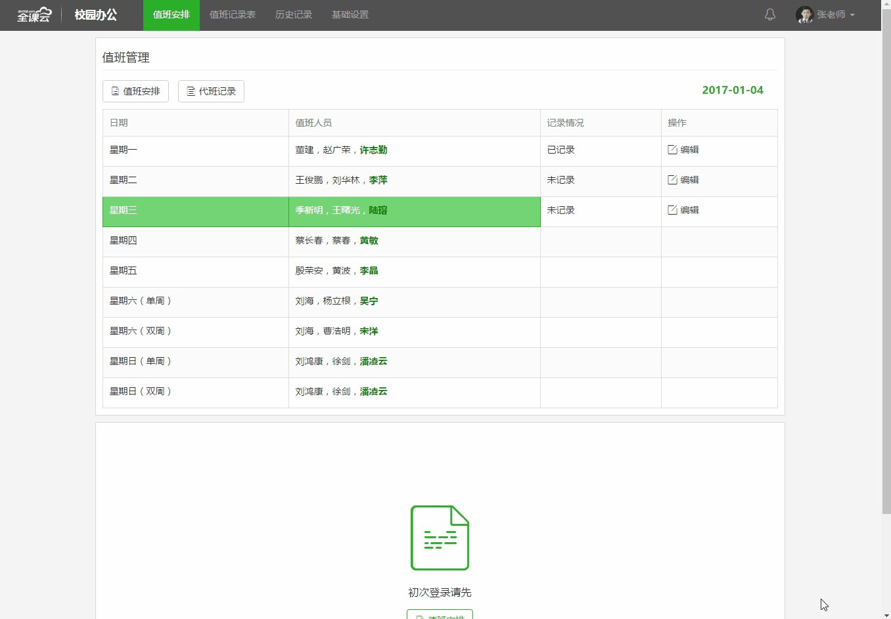

QKYUIBS1.x
全课云2017UI规范应用实例迭代
此规范由自主设计规范+前端框架bootstrap3.0+模块化js seajs作为支架建立，此基础上按应用进行实践优化。
#1_0（OA应用-行政值班初始版）
版本说明：无
#1_3（基础应用-毕业生网上报名系统）
版本说明：在1_2基础上，增加了复选父子类联动交互，和导航个人信息支持是否显示。
#1_1（基础应用-学生电子信息）
版本说明：无
#1_4（OA应用-整体框架版）
版本说明：在1_3基础上，做了整体性优化，项目独有性css独立开来，覆盖基础和快速css融合成一个，增加了完整模块css，优化表格基础，表单基础，按钮基础，优化了seajs的写法，统一用暴露执行体方式进行模块调用

#1_2（OA应用-行政值班优化版）
版本说明：此版本后加入seajs config,使文件结构更加模块化，并加入手机移动端分支优化。
#1_5（OA应用-行政值班再次优化版）
版本说明：此版本实施1_4的基础页面上进行优化行政值班，内建了头部的页面，跟1_4一样独立自生css。
QKYUIBS2.x
全课云2017UI规范2.0应用实例迭代
2.0版本在实施1_4的基上础，然后进行一次大规模的文件结构变化，2_0的变化在于简化文件结构，和接近完善的头部插件，和一些头部跳转的页面！
#2_0（OA应用-工资管理）
版本说明：此版本实施1_4的基础，然后进行一次大规模的文件结构变化，2_0的变化在于简化文件结构，和接近完善的头部插件，和一些头部跳转的页面，工资管理以后的项目将全部应用新的文件结构！虽然变化了文件结构，但中心思想还是一样的，所有布局和基础css都是跟之前的一样，改变大的是js的路径调用，依旧在seajs的强大整洁能力下发挥着高效力！请充分注意seajs的seaconfig的配置js